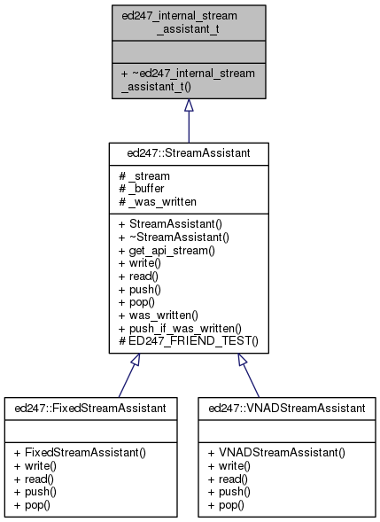
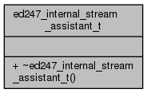

ED247 Library
VA2.3.0
Implementation of ED247-A standard
Main Page
Related Pages
Modules
Data Structures
Files
Data Structures
Data Structure Index
Class Hierarchy
ed247_internal_stream_assistant_t Struct Reference
Inheritance diagram for ed247_internal_stream_assistant_t:

Collaboration diagram for ed247_internal_stream_assistant_t:

The documentation for this struct was generated from the following file:
src/ed247/
ed247_stream_assistant.h
ed247_internal_stream_assistant_t
Generated by
1.8.11
 1.8.11
1.8.11